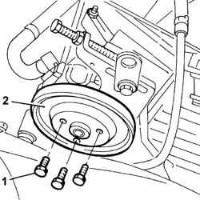
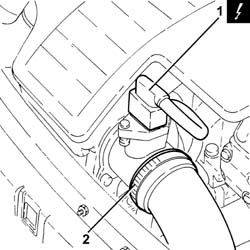
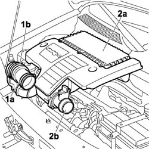
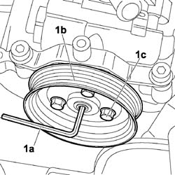
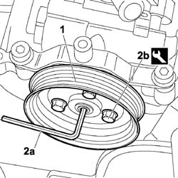

1092C14 power steering pump/self levelling suspension pump pulley - r + r with belt removed
- Path
- Procedures > 10 ENGINE > 1092 ENGINE COMPONENT MISCELLANEOUS DRIVES > 1092C POWER STEERING/SELF-LEVELLING SUSPENSION PUMP DRIVE > 1092C14 power steering pump/self levelling suspension pump pulley - r + r with belt removed
- Kind
- repair procedure (removal / refitting; the operation number is the code)
- Applies to
- engines: 1.4 8v, 1.6 16v, 1.3 JTD 16V; all production periods
- Interactive page
- https://sloeber94.github.io/elrnDB-fDbl/en/#/2584380
Applies to: engines: 1.4 8v, 1.6 16v; all production periods
 Removing
Removing
 Refitting
Refitting1. Unscrew the bolts securing the pulley to the pump.
2. Remove the power steering pump pulley.

Applies to: engines: 1.4 8v, 1.6 16v; all production periods
Refitting
RemovingFit the power steering pump pulley.
Tighten the pulley bolts to torque.
 | Fastening | Component | Ø | Value (daNm) |
|---|---|---|---|---|
- | Bolt | POWER STEERING PUMP DRIVE PULLEY | M8 | 2.5 |
Applies to: engines: 1.3 JTD 16V; all production periods
Removing
RefittingPosition the car on the ramp.
Disconnect the battery negative terminal.
 | Name | Connector |
|---|---|---|
- | Battery |
1. Disconnect the electrical connection from the air flow meter.
| Name | Connector |
|---|---|---|
1 | Air flow meter |
2. Loosen the band and disconnect the the turbocharger air inlet sleeve from the rigid pipe, air flow meter side.

Applies to: engines: 1.3 JTD 16V; all production periods
1. Loosen the band (1a) and disconnect the flexible sleeve (1b) from the air intake.
2. Remove the air filter (2a) complete with air flow meter (2b) by releasing from the underlying pins and then from the rear fastenings.

Applies to: engines: 1.3 JTD 16V; all production periods
Carry out
Op. 4450B04 RIGHT FRONT WHEEL - R.R.
Carry out
Op. 7055B54 PROTECTION/GUARD UNDER ENGINE - R.R.
Carry out
Op. 1092C10 POWER STEERING AND/OR SELF-LEVELLING SUSPENSION PUMP DRIVE BELT - R + R
1. Use a socket wrench of appropriate size (1a) to prevent power steering pump pulley (1b) from turning, then unscrew bolts (1c) and remove the power steering pump drive pulley.

Applies to: engines: 1.3 JTD 16V; all production periods
Refitting
Removing1. Position the power steering pump drive pulley in its seat.
2. Screw in the pulley bolts without tightening. Prevent the pulley from turning using a socket wrench of appropriate size (2a) and tighten pulley bolts (2b) to the specified torque.
| Fastening | Component | Ø | Value (daNm) |
|---|---|---|---|---|
2b | Bolt | POWER STEERING PUMP DRIVE PULLEY | - | (Power assisted steering pump side) 0.6 |

Applies to: engines: 1.3 JTD 16V; all production periods
Carry out
Op. 1092C10 POWER STEERING AND/OR SELF-LEVELLING SUSPENSION PUMP DRIVE BELT - R + R
Carry out
Op. 4450B04 RIGHT FRONT WHEEL - R.R.
Carry out
Op. 7055B54 PROTECTION/GUARD UNDER ENGINE - R.R.
Fit the air filter complete with air flow meter. Secure to the rear fastening and then to the underlying pins.
Connect the flexible sleeve to the air intake on the beam and tighten the retaining band.
Connect the air intake sleeve to the turbocharger, air flow meter side, and tighten the band.
Connect the electrical connection to the air flow meter.
| Name | Connector |
|---|---|---|
- | Air flow meter |
Connect the battery negative terminal.
| Name | Connector |
|---|---|---|
- | Battery |
Remove the car from the ramps.
Topics linked from this page (5)
- 1092C10 power steering and/or self-levelling suspension pump drive belt - r + r
- 4450B04 right front wheel r r
- 7055B54 under-engine guard - r r
- A001 BATTERY
- K041 AIR FLOW METER